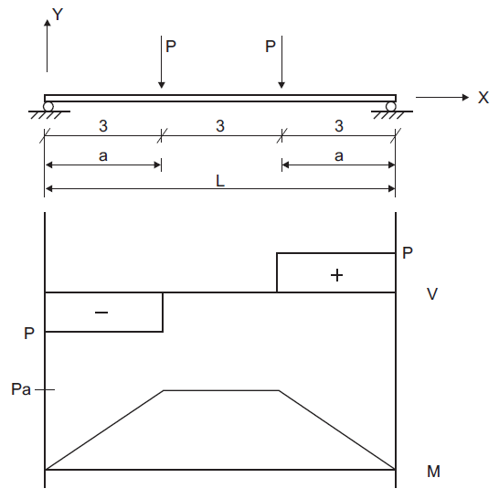
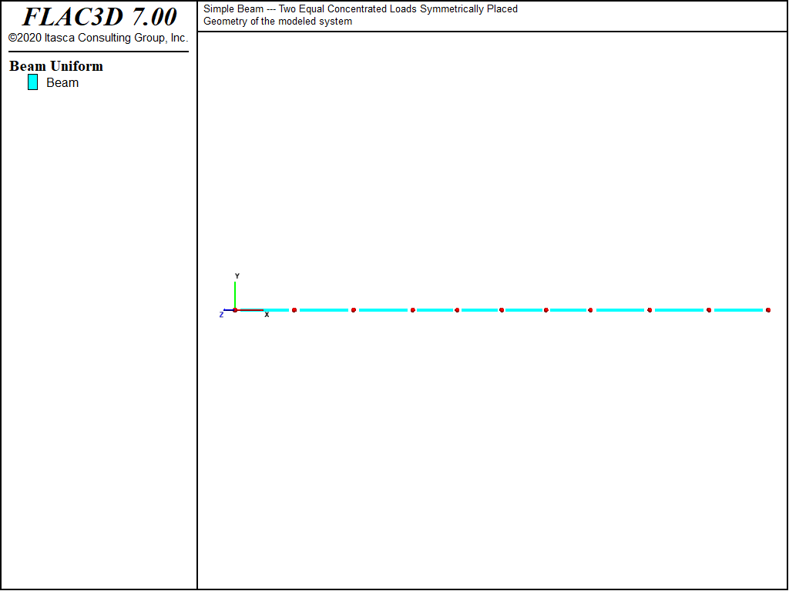
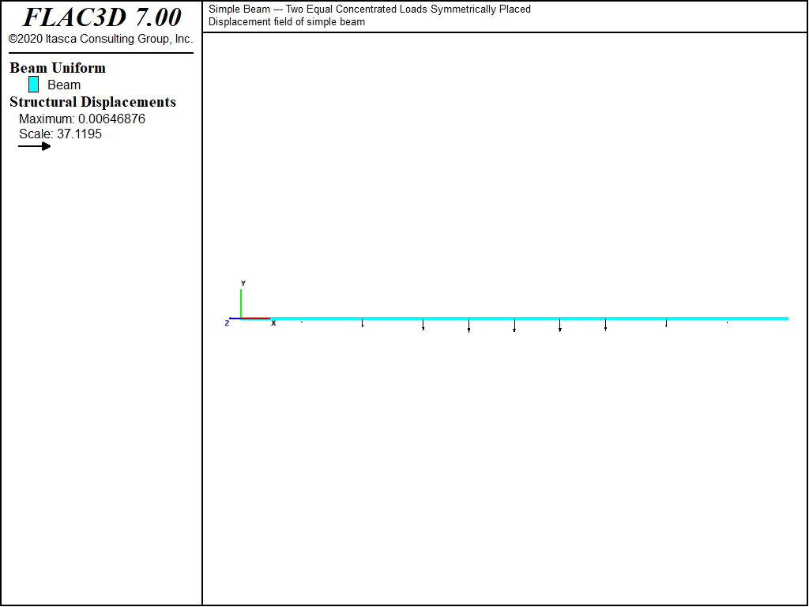
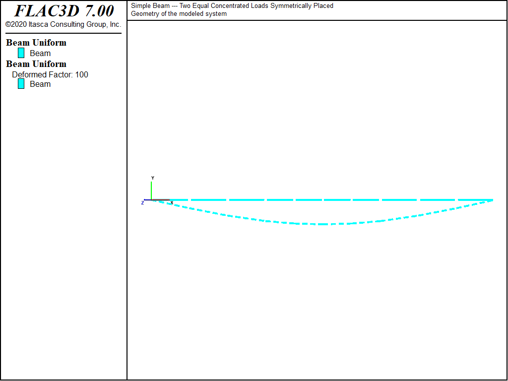
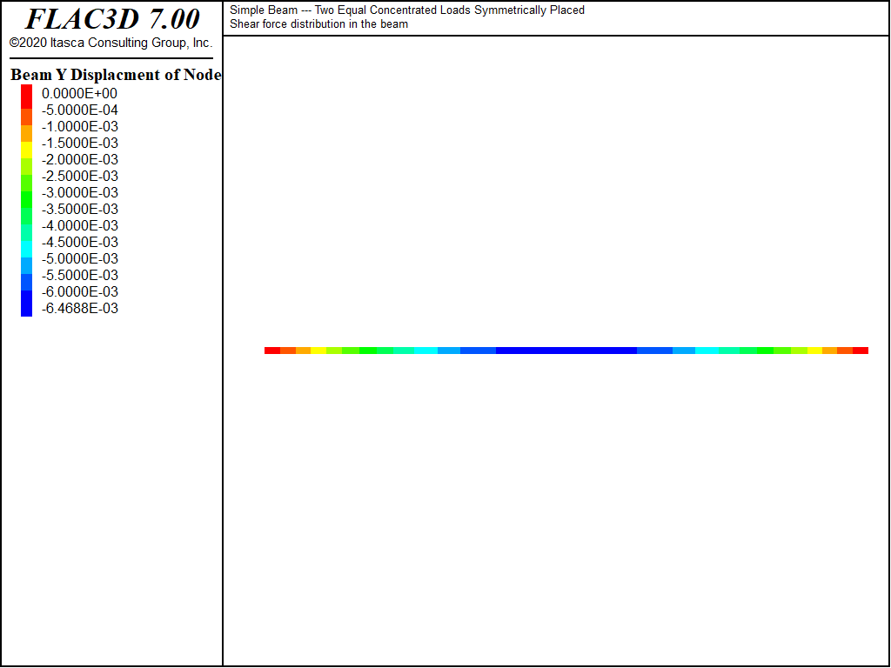
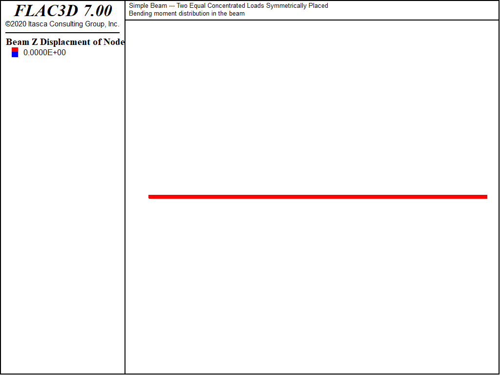
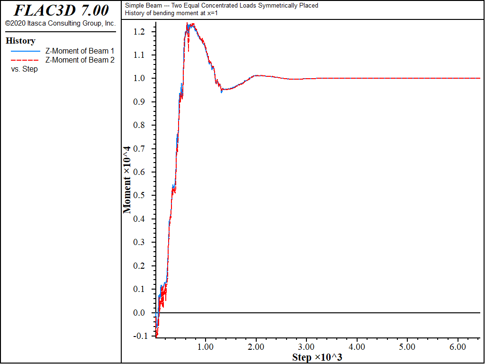

简支梁——两个等值集中荷载——梁单元
问题描述
注意
要在 FLAC3D 中查看该项目，请使用菜单命令 。选择 “Structure/Beam/ConcentratedLoads” 并选中 “ConcentratedLoads.f3prj” 载入。所用 主数据文件（main data files） 示于本例末尾。其余数据文件可在该项目中找到。
简支梁承受两个等值集中荷载，对称布置如 图 1（Figure 1） 所示。该配置的剪力图与弯矩图也示于图中。剪力大小 \(V\) 等于所施加的集中荷载 \(P\)。最大弯矩 \(M_{max}\) 出现在两荷载之间，等于 \(P a\)。梁的最大挠度 \(\Delta_{\rm max}\) 出现在跨中，由 AISC（1980，第 2-116 页）给出为
| 其中： | \(E\) | = | 杨氏模量；以及 |
| \(I\) | = | 惯性二次矩（\(I\) = \(I_y\) = \(I_z\)）。 |

图 1：承受两个等值集中荷载的简支梁（距离单位为米）。
本例使用若干性质：
| 横截面积（\(A\)） | 0.006 m3 |
| 杨氏模量（\(E\)） | 200 GPa |
| 泊松比（\(\nu\)） | 0.30 |
| 关于局部 \(y\) 轴的二次矩（I\(_y\)） | 200 × 10-6 m4 |
| 关于局部 \(z\) 轴的二次矩（I\(_z\)） | 200 × 10-6 m4 |
| 极惯性矩（\(J\)） | 0.0 |
在 图 1（Figure 1） 所示两处施加 \(P\) = 10000 N 的点荷载。
FLAC3D 模型由 10 个梁单元与 11 个节点构成，如 图 2（Figure 2） 所示。梁通过发出三条独立的 沿线创建梁单元命令（structure beam create by-line）（ID 均为 1）创建，以确保节点正好位于梁的三分点。此外在中间三分之一创建四个单元，确保节点正好位于梁中心，以便把该节点位移与 \(\Delta_{\rm max}\) 比较。对所有节点施加对应梁理论行为的边界条件：即 \(z\) 方向无平动，绕 \(x\) 与 \(y\) 轴无转动。通过限制 \(y\) 方向平动在梁端指定简支。在梁三分点施加两个沿负 \(y\) 方向作用的点荷载。


图 2：简支梁问题的 FLAC3D 模型。
位移场示于 图 3（Figure 3）。最大位移出现在梁中心，等于 6.469×10-3 m，与公式 (1) 的理论值完全一致。
小应变模拟中可视化位移场的另一种方法是使用 Beam 绘图项并指定非零的变形放大系数。图 4（Figure 4） 同时示出未变形与变形后的形状。


图 3：简支梁的位移场。


图 4：简支梁的变形（放大 100 倍）与未变形形状。
图 5（Figure 5） 与 图 6（Figure 6） 示出剪力与弯矩分布，与理论解完全一致。这两个绘图项按 梁符号约定（Beam sign conventions） 在单元坐标系中显示这些量。本模型中所有单元系与全局系对齐，因此剪力与弯矩分别沿单元 \(y\) 与 \(z\) 方向作用。
\(x=1\) 处力矩的演化示于 图 7（Figure 7），最终达到 10000 N-m 的稳态值。图中叠加了两个历史记录：一个采样单元 1 右端的力矩，另一个采样单元 2 左端的力矩。若以一致的体系表示，这两个值应相同，图示表明它们确实相同。这是因为构成该梁的各单元方向一致（用 structure beam create 命令创建）。注意若用以下命令按全局系打印作用于各单元的力矩
structure beam list force-node global range component-id 1 2
可发现作用于单元 1 右端的力矩为正，而作用于单元 2 左端的力矩为负。这是满足平衡的正确行为。


图 5：简支梁中剪力分布。


图 6：简支梁中的力矩分布。


图 7：简支梁中 x = 1 处力矩的演化。
参考文献
AISC. Manual of Steel Construction, Eighth Edition. Chicago: American Institute of Steel Construction Inc. (1980).
数据文件
ConcentratedLoads.dat
model new
model large-strain off
model title ...
"Simple Beam --- Two Equal Concentrated Loads Symmetrically Placed"
; 创建梁，确保在三个指定点处均存在节点
struct beam create by-line ( 0, 0, 0) ( 3, 0, 0) id=1 segments=3
struct beam create by-line ( 3, 0, 0) ( 6, 0, 0) id=1 segments=4
struct beam create by-line ( 6, 0, 0) ( 9, 0, 0) id=1 segments=3
; 指定梁参数
struct beam property young=2e11 poisson=0.30 cross-sectional-area=6e-3 ...
moi-polar=0.0 moi-y=200e-6 moi-z=200e-6
; 指定模型边界条件，包括所施加的荷载
struct node fix velocity-z rotation-x rotation-y
; 约束所有非梁模态
struct node fix velocity-y range union position-x=0 position-x=9
; 梁两端采用滚动支承
struct node apply force=(0.0,-1e4,0.0) range union position-x=3 position-x=6
; 施加集中荷载
; 设置用于监测响应的历程。
struct beam history name='mom1' moment-z end 2 position (0.5,0,0)
; 第一单元右侧弯矩
struct beam history name='mom2' moment-z end 1 position (1.5,0,0)
; 第二单元左侧弯矩
; 使模型达到平衡
model solve ratio-local=1e-7
model save 'ConcentratedLoads'
⇐ Tutorial: Braced Support of a Vertical Excavation | Cantilever Beam with Applied Moment at Tip — Beam Elements ⇒
| 这些内容对您有帮助吗？… | FLAC3D © 2019, Itasca | 原文更新于 2020 年 10 月 8 日 |